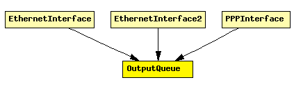

File: Network/Queue/OutputQueue.ned
Prototype for per-NIC output queues. Concrete queues can implement drop-tail, RED etc. policy.
Interface to Layer 2 modules: The C++ class implementing the queue must implement (i.e. subclass from) IPassiveQueue, and should send a packet whenever the L2 module asks for one by calling the requestPacket() method.
See also: DropTailQueue, DropTailQoSQueue, REDQueue
The following diagram shows usage relationships between modules, networks and channels. Unresolved module (and channel) types are missing from the diagram. Click here to see the full picture.
If a module type shows up more than once, that means it has been defined in more than one NED file.
| EthernetInterface | Ethernet network interface. Corresponds to the prototype NetworkInterface. Complements EtherMAC and EtherEncap with an output queue for QoS and RED support. |
| EthernetInterface2 | Ethernet network interface, which supports full-duplex operation only. Corresponds to the prototype NetworkInterface. Complements EtherMAC2 and EtherEncap with an output queue for QoS and RED support. |
| PPPInterface | PPP interface. Complements the PPP module with an output queue for QoS and RED support. |
| Name | Direction | Description |
|---|---|---|
| in | input | |
| out | output |
simple OutputQueue gates: in: in; out: out; endsimple